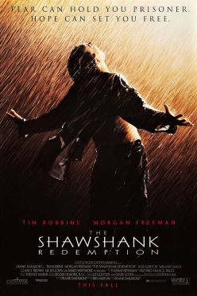

Schindler's List is a 1993 American epic historical drama film directed and produced by Steven Spielberg, and written by Steven Zaillian.
 IMDB Review/>
IMDB Review/>
The Shawshank Redemption is a 1994 American prison drama film written and directed by Frank Darabont, based on the 1982 Stephen King novella Rita Hayworth and Shawshank Redemption.
 IMBD ReviewA Beautiful Mind is a 2001 American biographical drama film about the mathematician John Nash, a Nobel Laureate in Economics, played by Russell Crowe.
 IMDB Review
IMDB Review